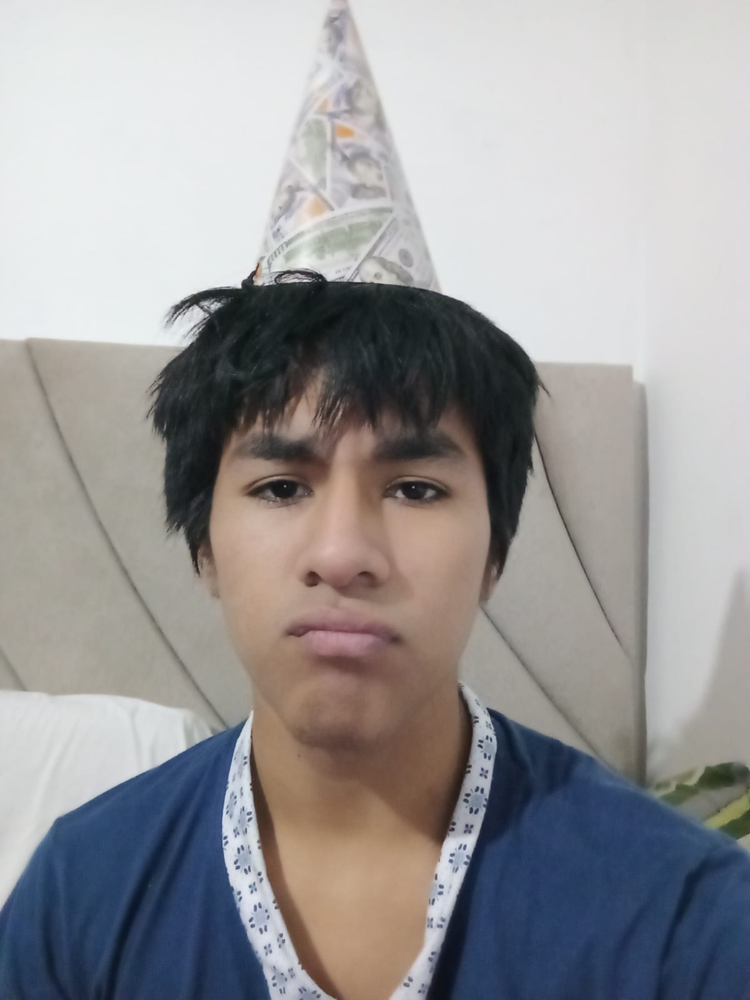

Fernando Luis Antunez Burga | WDD 130

Welcome to my page! My name is Fernando Luis Antunez Burga, and I am from Lima, Peru. I am currently a software development student, and I'm really excited about this course because I have always been passionate about computers and programming. When I am not studying or working, I like to keep a steady routine. I go to the gym on weeknights to train, and I enjoy riding my bike with my cousins on Thursdays or during the weekend. In my free time, my favorite hobby is watching anime, as well as TV series and movies. My main goal in programming is to earn my degree and keep learning to reach the highest level in this career. In the future, I want to build my own websites and use my skills to help my family.